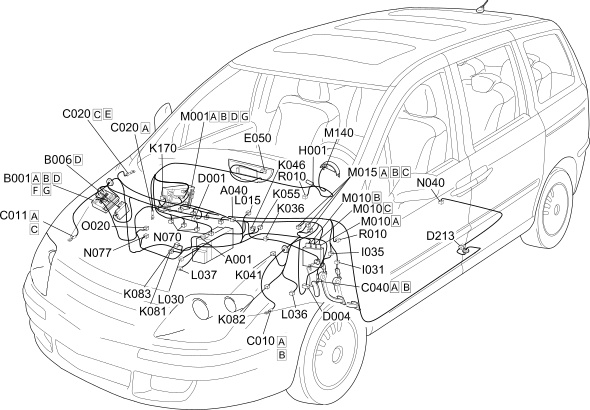

E5050 DIESEL ENGINE ELECTRONIC MANAGEMENT COMPONENT LOCATION
- Path
- Electrical equipment > 1 ELECTRICAL FUNCTIONS > E50 ENGINE CONTROL AND MANAGEMENT SYSTEMS > E5050 DIESEL ENGINES ELECTRONIC MANAGEMENT > E5050 DIESEL ENGINE ELECTRONIC MANAGEMENT COMPONENT LOCATION
- Kind
- topic
- Applies to
- engines: 2.0 16V JTD; all production periods; only with equipment: MY 2005 and FAP
- Interactive page
- https://sloeber94.github.io/elrnDB-fUlss/en/#/179009258
Applies to: engines: 2.0 16V JTD; all production periods; only with equipment: MY 2005 and FAP

Component code | Description | Reference to the assembly |
|---|---|---|
BATTERY | ||
HEATER PLUGS | ||
ENGINE COMPARTMENT JUNCTION UNIT | ||
MAXI FUSE BOX - 2 | - | |
LEFT FRONT EARTH | - | |
RIGHT FRONT EARTH | - | |
PASSENGER SIDE DASHBOARD EARTH | - | |
EARTH ON ENGINE | - | |
FRONT/DASHBOARD COUPLING | - | |
FRONT/ENGINE COUPLING | - | |
FUEL TANK COUPLING | - | |
INSTRUMENT PANEL | ||
Ignition switch | ||
CLUTCH PEDAL SWITCH | - | |
Safety switch on brake pedal for cruise control | - | |
ENGINE COOLANT TEMPERATURE SENSOR/SENDER UNIT | ||
AIR FLOW METER | ||
RPM SENSOR | ||
ACCELERATOR PEDAL POTENTIOMETER | - | |
FUEL TEMPERATURE SENSOR | ||
SUPERCHARGING SENSOR | - | |
FUEL PRESSURE SENSOR | ||
CYLINDER REFERENCE SENSOR | ||
Variable geometry solenoid valve | - | |
EGR SOLENOID VALVE | ||
TURBINE VARIABLE GEOMETRY CONTROL SOLENOID VALVE | ||
WASTE GATE SOLENOID VALVE | - | |
BODY COMPUTER | ||
ENGINE MANAGEMENT CONTROL UNIT | ||
HEATER PLUGS CONTROL UNIT | - | |
WARNING LIGHTS AND MILOMETER CONTROL UNIT (NSO) | - | |
FUEL PUMP AND LEVEL GAUGE | ||
INJECTOR | ||
FUEL PRESSURE REGULATOR | ||
Diesel heating resistance | - | |
MULTIPLE DIAGNOSTIC COUPLING | - |
Topics linked from this page (47)
- 1040A FUEL TANK AND COMPONENTS
- 1056B MULTI-POINT INJECTION SYSTEM (MPI)
- 1060G DIESEL INJECTION PRESSURE PUMP ELECTRONIC CONTROL
- 1060E DIESEL PRESSURE PUMP
- 1080C EXHAUST GAS RECIRCULATION SYSTEM (E.G.R.)
- 5505A MULTI-FUNCTION COMPONENTS
- 5510C COIL, ECU, SENSORS
- 5530B BATTERY AND LEADS
- 5520A IGNITION SWITCH
- 5520C COLD STARTING SYSTEM (DIESEL ENGINES)
- 5560B ANALOGUE CONTROL PANEL
- A001 BATTERY
- A040 HEATER PLUGS
- B001 ENGINE COMPARTMENT JUNCTION UNIT
- B006 MAXI FUSE BOX - 2
- C010 LEFT FRONT EARTH
- C011 RIGHT FRONT EARTH
- C020 PASSENGER SIDE DASHBOARD EARTH
- C040 EARTH ON ENGINE
- D001 FRONT/DASHBOARD COUPLING
- D004 FRONT/ENGINE COUPLING
- D213 FUEL TANK COUPLING
- E050 INSTRUMENT PANEL
- H001 Ignition switch
- I031 CLUTCH PEDAL SWITCH
- I035 Safety switch on brake pedal for cruise control
- K036 ENGINE COOLANT TEMPERATURE SENSOR/SENDER UNIT
- K041 AIR FLOW METER
- K046 RPM SENSOR
- K055 ACCELERATOR PEDAL POTENTIOMETER
- K081 FUEL TEMPERATURE SENSOR
- K082 SUPERCHARGING SENSOR
- K083 FUEL PRESSURE SENSOR
- K170 CYLINDER REFERENCE SENSOR
- L015 Variable geometry solenoid valve
- L030 EGR SOLENOID VALVE
- L036 TURBINE VARIABLE GEOMETRY CONTROL SOLENOID VALVE
- L037 WASTE GATE SOLENOID VALVE
- M001 BODY COMPUTER
- M010 ENGINE MANAGEMENT CONTROL UNIT
- M015 HEATER PLUGS CONTROL UNIT
- M140 WARNING LIGHTS AND MILOMETER CONTROL UNIT (NSO)
- N040 FUEL PUMP AND LEVEL GAUGE
- N070 INJECTOR
- N077 FUEL PRESSURE REGULATOR
- O020 Diesel heating resistance
- R010 MULTIPLE DIAGNOSTIC COUPLING